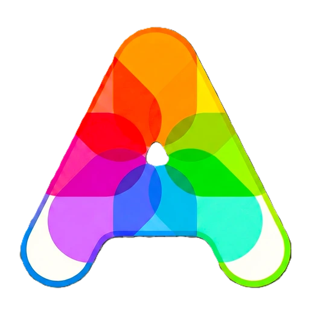

Registro de datos

Autorizacion
Laboratorio
Este procedimiento implica verificar la coherencia entre las mediciones de los distintos operadores, asegurando que cumplan con los criterios de aceptacion estadisticos (como repetibilidad y reproducibilidad) y normativos establecidos.
Método
Producto
Ensayo
Expediente
Unidad de Medida
Paso 1
Selecciona la estructura de datos
Elige si trabajas con un analito o multiples para continuar.
Paso 2
Selecciona el parámetro
Elige como agrupar las repeticiones.
Esperando selección
Definir otro parámetro:
Paso 3
Selecciona el tipo de dato
Elige si los resultados que vas a ingresar son cuantitativos o cualitativos para desbloquear el siguiente paso.
Paso 4
Define la cantidad de parámetros
Ingrese el número de parámetros y de sus lecturas esperadas.
Esperando parámetro
Caso especial k=2:
Pendiente
En progreso
Completo
© 2025 Zorem Production